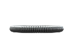
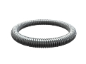
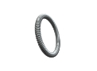

Пружины манжетные (сальника)
Изготовление манжетных пружин на заказ партиями от 1-й штуки за 1-3 дня.
Выполним по разнообразным параметрам, чертежам или образцу, фото, эскизу.
- 
- 
- 
Изготовление и производство пружин сальника
Ищите где заказать и купить манжетные пружины (сальника)? Наша производственная компания ООО "Индустриал Спрингс" изготавливает и реализует пружины для манжет оптом и в розницу по доступным ценам.
Манжетные пружины используются как армирующий компонент манжет уплотнения валов по нормам ГОСТа 8752-79. Один из концов данной пружины имеет конический зацеп, с помощью которого создается замкнутое кольцо, сохраняющее все пружинящие свойства. Пружины для манжет имеют плотную навивку с межвитковым давлением, что позволяет обеспечивать надежное соединение пружины в кольцо.
В производстве пружин сальника используются качественные стали (нержавеющие, легированные, углеродистые, и теплоустойчивые), а также специализированное оборудование, что позволяет нам изготавливать манжетные пружины, соответствующие нормам ГОСТа. Менеджера нашей компании помогут вам рассчитать и подобрать пружины для манжет с необходимым диаметром проволоки, количеством полных витков и материалом. Для оформления заказа или консультации свяжитесь с нами через форму заявки либо по телефону.